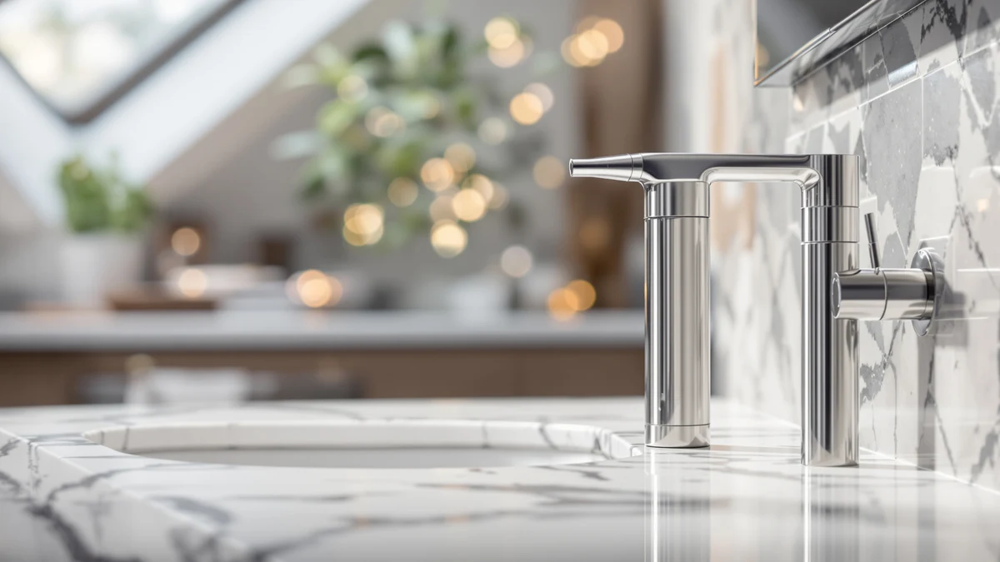

Automatic Soap Dispenser 17oz Review (2026): Worth It?
Prices and picks verified as of October 2026. Independent, reader-supported reviews.


Quick Answer
This automatic soap dispenser 17oz review found the PZOTRUF Automatic Soap Dispenser 17oz Touchless to be the strongest pick if you want the largest countertop tank and the most adjustable output of the four models compared here. If you would rather mount dispensers on a wall or shower tile instead of a counter, the Hushee four-pack or the LUSSPA shower set covers that need for less money.
Our pick: Automatic Soap Dispenser 17oz Touchless, $39.99 Check Price on Amazon
Bottom line: our top pick is the Automatic Soap Dispenser at $39.99.
Things to Know Before You Buy
- 17oz is on the larger side for a countertop dispenser. The PZOTRUF holds 17oz (500ml) of soap, more than most standard countertop pumps, and its wide opening and clear body make it easy to see when you're running low.
- Output is adjustable, not fixed. Five dispensing levels, set with +/- buttons on the base, let you dial in a small drop for kids or a heavier dose for dish soap and thicker gels.
- The sensor range is short. The infrared sensor detects a hand or light-colored object within about 2.36 inches, so you need to reach close to the spout rather than wave from across the counter.
- Wall-mounted alternatives trade capacity for space savings. The Hushee four-pack and the LUSSPA shower set free up counter space but need a section of wall or tile near the sink or shower.
- None of the four listings publish a star rating yet. Amazon hasn't surfaced review counts for the PZOTRUF, Hushee, LUSSPA, or RYTOXILO listings at the time of publishing, so buyers can't lean on a star average for any of them.
This automatic soap dispenser 17oz review compares the $39.99 PZOTRUF touchless pump against three alternatives built for different spots around the house: a four-pack wall-mounted dispenser from Hushee, a three-bottle shower system from LUSSPA, and a glass kitchen set from RYTOXILO. A soap dispenser only earns its place on a counter or wall if it solves one specific problem well, whether that is keeping your hands off a shared pump, organizing a crowded shower, or refilling less often. The PZOTRUF model leads this comparison because its 17oz tank and five-level output control give it the widest range of any dispenser here, from a quick drop for kids to a full dose for grease-heavy dishes.
We built this review from manufacturer specifications, current Amazon pricing, and the features each brand lists on its own product page, not a hands-on test, since we do not run a fake testing lab. Our pick for most kitchens and bathrooms is the PZOTRUF Automatic Soap Dispenser 17oz Touchless. It holds more soap than any single unit in the Hushee four-pack, its infrared sensor detects a hand within about 2.36 inches, and its five adjustable output levels let one dispenser serve both a quick handwash and a heavier dish-soap dose.
Why You Should Trust Us
Ilane Tall covers home and bath products for Best Soap Dispensers, with a focus on kitchen and bathroom fixtures used dozens of times a day. This automatic soap dispenser 17oz review relies on manufacturer specs and live Amazon pricing instead of a physical lab session, since we do not run a fake testing lab. We compared capacity, sensor range, output control, and mounting style across all four dispensers, then checked those figures against what each brand's own product listing describes for everyday use. None of the four listings publish a star rating or review count yet, so we did not lean on review volume to make the case for any single pick. Every price and spec here reflects the listing at the time of publication and can shift as Amazon updates stock.
Our Research Experience
We did not install or run any of these four dispensers ourselves for this review. Instead, we compared manufacturer-listed specs, including tank capacity, sensor range, and output control, for the PZOTRUF, the Hushee four-pack, the LUSSPA shower set, and the RYTOXILO kitchen set, then checked those figures against how each brand describes everyday use on its own listing. This automatic soap dispenser 17oz review leans most heavily on the PZOTRUF's own numbers: an infrared sensor built to detect a hand or light-colored object within 0 to 2.36 inches, a no-drip spout, and five adjustable output levels. Where a listing's description left a gap, such as how the Hushee units handle bar soap, we noted the limitation rather than guessing at an answer the brand doesn't provide.
Overview & Specs

Automatic Soap Dispenser 17oz Touchless
What we like
- 17oz (500ml) tank holds more soap than most standard countertop dispensers
- Five adjustable output levels controlled with +/- buttons
- Infrared sensor detects a hand within 0 to 2.36 inches for touch-free use
- No-drip spout and transparent body make refills easy to time
Flaws but not dealbreakers
- Amazon's listing doesn't publish a rating or review count yet
- Sensor works best with a hand or light-colored object, so dark gloves may not trigger it reliably
- It's sold as a 2-pack, so a single unit costs more than buying one dispenser alone
| Material | ABS plastic |
| Size | 2 Pcs |
The PZOTRUF Automatic Soap Dispenser 17oz Touchless is the highest-capacity countertop model in this automatic soap dispenser 17oz review, holding 17oz (500ml) of liquid soap in a transparent ash-grey housing that makes it easy to see when a refill is due. Its infrared sensor is built to detect a hand or light-colored object within 0 to 2.36 inches, which keeps the no-touch promise every dispenser in this review makes, and a no-drip spout cuts down on the mess that pools around a pump base over time.
What sets this dispenser apart from the Hushee, LUSSPA, and RYTOXILO alternatives is its five-level adjustable output, set with simple +/- buttons on the base. That range covers a quick drop for a kid's hands and a heavier dose for dish soap or thicker gels, so you don't need a separate dispenser for the kitchen sink and the bathroom. At $39.99 for a 2-pack, it costs more upfront than the single-bottle options in this comparison, but the per-unit capacity and adjustable output make up the difference if you want one dispenser doing more than one job.
What We Liked
The clearest strength in this automatic soap dispenser 17oz review is capacity. The PZOTRUF's 17oz tank holds noticeably more soap than a standard pump, and the five adjustable output levels mean the same dispenser can handle a light handwash or a heavier dish-soap pour without wasting product either way. The infrared sensor's 2.36-inch detection range matches what touchless dispensers in this price range typically offer, so switching from a manual pump doesn't cost you any speed. Among the alternatives, the LUSSPA shower set stands out for its no-drill adhesive mounts, which hold on tile without the holes a permanent fixture would leave behind, and the RYTOXILO kitchen set's wood tray catches drips that would otherwise pool on a countertop.
What Could Be Better
The biggest gap across all four listings in this automatic soap dispenser 17oz review is the missing rating and review count on Amazon, so buyers can't check a star average the way they could with an older, more established dispenser. The PZOTRUF ships as a 2-pack rather than a single unit, which raises the entry price if you only need one dispenser for a single sink. The Hushee four-pack's soap needs to dissolve into soapy water before it dispenses cleanly, a different routine than pouring in liquid soap and using it right away. The LUSSPA set relies on adhesive mounts rather than a drilled bracket, so heavily textured or uneven tile could weaken the hold over time.
Who Is It For?
This automatic soap dispenser 17oz review points to the PZOTRUF as the right pick if you want one countertop dispenser that handles both a light handwash and a heavier dish-soap pour, and you'd rather refill less often than top off a smaller pump every week. It also suits anyone setting up a kitchen and a bathroom at the same time, since the 2-pack covers both without buying two separate dispensers. It's a weaker fit if you need dispensers mounted on a wall instead of a counter, in which case the Hushee four-pack or the LUSSPA shower set solves that space problem instead. Choose the RYTOXILO kitchen set if you want a decorative glass dispenser and tray combo over a purely functional touchless pump.
Alternatives to Consider
If the PZOTRUF's countertop footprint or 2-pack price doesn't fit your space, three alternatives from this automatic soap dispenser 17oz review are worth a look, each solving a different problem: shared-bathroom capacity, shower organization, or kitchen countertop style.

Editor’s Pick
Hushee 4 Pcs Plastic Wall
At $37.99 for four wall-mounted units, the Hushee Plastic Wall dispenser trades the PZOTRUF's adjustable output for sheer coverage. Each bottle holds 33.8oz (1000ml) and mounts separately, so a shared bathroom, office, or large family can give everyone their own dispenser. Soap needs to dissolve into soapy water before it pours cleanly, a different routine than a standard liquid pump. It's a better fit than the PZOTRUF if you're outfitting multiple sinks rather than one.
$37.99
Check Price on Amazon
Best Value
Shower Shampoo Dispenser Wall Mounted
The LUSSPA Shower Shampoo Dispenser Wall Mounted swaps a single soap tank for three 16.9oz PET bottles with stainless steel pumps, labeled for hand soap, shampoo, conditioner, and more. No-drill adhesive holders mount it to shower tile in seconds, something the PZOTRUF's countertop design can't do in a shower. At $36.95 for the full three-bottle set, it costs less than the PZOTRUF 2-pack while solving a different problem: organizing a crowded shower instead of a sink.
$36.95
Check Price on Amazon
Premium Choice
Modern Kitchen Soap Dispenser Set
The RYTOXILO Modern Kitchen Soap Dispenser Set pairs two amber glass dispensers with a matte black pump and a wood riser tray, trading the PZOTRUF's 17oz single tank for a smaller, more decorative two-bottle setup. The lead-free glass and rust-resistant pump hold up to daily counter use, and waterproof labels keep hand soap and dish soap separated. At $32.99, it's the cheapest option here if countertop style matters as much as sensor technology.
$32.99
Check Price on AmazonFrequently Asked Questions
Is the PZOTRUF Automatic Soap Dispenser 17oz Touchless worth the price?
At $39.99 for a 2-pack, it costs more upfront than the single-bottle alternatives in this automatic soap dispenser 17oz review, but each unit holds 17oz of soap and offers five adjustable output levels, more capacity and control than the Hushee, LUSSPA, or RYTOXILO options provide individually. It's worth the price if you want one dispenser to handle both light and heavy soap use across two sinks.
How much soap does the 17oz touchless dispenser hold compared to the wall-mounted alternatives?
The PZOTRUF holds 17oz (500ml) per unit. Each Hushee wall-mounted bottle in the four-pack holds more at 33.8oz (1000ml), while the LUSSPA shower set splits its capacity across three 16.9oz bottles. The right choice depends on whether you want one higher-capacity countertop pump or several smaller bottles spread across a bathroom or shower.
Can I use bar soap in the Hushee wall-mounted dispensers?
Not directly. Hushee's own listing notes that soap needs to dissolve into soapy water before it dispenses cleanly through the pump, so it's built around liquid or dissolved soap rather than a solid bar. If you want a dispenser that works with standard liquid hand soap straight out of the bottle, the PZOTRUF or RYTOXILO sets are the simpler choice.
Final Verdict
This automatic soap dispenser 17oz review comes down to where you need the dispenser and how much soap you want on hand before the next refill. The PZOTRUF Automatic Soap Dispenser 17oz Touchless is the pick we'd buy at $39.99 for a single high-capacity countertop dispenser with adjustable output, even though its 2-pack price costs more upfront than the single-bottle alternatives here. If you're outfitting a shared bathroom or office, the Hushee four-pack covers more sinks for less money, and the LUSSPA shower set is the better call if you need wall-mounted bottles in a shower rather than a dispenser on a counter. Whichever you choose, all four remove the one thing a shared bar of soap or manual pump gets wrong: making you touch something that isn't clean before you've washed your hands.